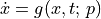
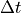
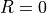
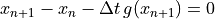
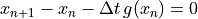

pyzag.ode
Generic ODE integration as NonlinearFunctionOperator factories.
For

and a step of size
, the Euler schemes form a recursive residual
for the chunked solver: backward Euler
or forward Euler
.The Euler integration math is fully abstract: it operates on
BlockVector objects and produces BlockOperator blocks via a
user-supplied ODEWrapper. This decouples the integration scheme
from any particular tensor backend (dense, sparse, structured, etc.).
- class pyzag.ode.ODEWrapper
Bases:
ABCBridge from raw user-ODE outputs to the abstract block types.
A user’s ODE module returns raw tensors
(x_dot, J_dot) = ode(t, x). The wrapper converts these into theBlockVector/BlockOperatorfamily that the Euler operator and downstream solver consume.- abstractmethod wrap_vector(raw: Tensor) BlockVector
Wrap a raw tensor into a
BlockVector.
- abstractmethod unwrap_vector(bv: BlockVector) Tensor
Extract the raw tensor representation from a
BlockVector.Required because the user’s ODE module operates on raw tensors and the chunk’s combined state must be assembled before the call.
- abstractmethod wrap_jacobian(diag: Tensor, sub: Tensor) BlockJacobian
Wrap raw per-step diagonal and subdiagonal tensors into a backend-typed
BlockJacobian.diag[k] = dR[k]/dx[k]andsub[k] = dR[k]/dx[k-1], both of shape(nblk_steps, ..., nstate, nstate)for the dense backend; other backends define their own raw contract.
- class pyzag.ode.DenseODEWrapper
Bases:
ODEWrapperDefault wrapper for dense torch tensors.
Uses
DenseBlockVectorandDenseBlockJacobian.- wrap_vector(raw: Tensor) BlockVector
Wrap a raw tensor into a
BlockVector.
- unwrap_vector(bv: BlockVector) Tensor
Extract the raw tensor representation from a
BlockVector.Required because the user’s ODE module operates on raw tensors and the chunk’s combined state must be assembled before the call.
- wrap_jacobian(diag: Tensor, sub: Tensor) BlockJacobian
Wrap raw per-step diagonal and subdiagonal tensors into a backend-typed
BlockJacobian.diag[k] = dR[k]/dx[k]andsub[k] = dR[k]/dx[k-1], both of shape(nblk_steps, ..., nstate, nstate)for the dense backend; other backends define their own raw contract.
- class pyzag.ode.IntegrateODE(ode: Module, wrapper: ODEWrapper | None = None)
Bases:
Module,NonlinearFunctionOperatorFactoryBase class for ODE integration factories.
Extends
torch.nn.Moduleso the user’s ODE parameters are discovered by the enclosing solver viaparameters().- Parameters:
ode –
torch.nn.Modulewhoseforward(t, x)returns(x_dot, J_dot)as raw tensors.wrapper – bridge between the raw ODE outputs and the abstract block types used by the solver.
- property lookback: int
Number of previous solution steps the residual depends on.
Declared abstract so a subclass that forgets it fails at instantiation rather than with a late
AttributeErrordeep in the solver.
- property wrapper: ODEWrapper
Backend bridge (an
ODEWrapper-like object) that wraps/unwraps raw tensors as backendBlockVectorobjects.
- class pyzag.ode.BackwardEulerODE(ode: Module, wrapper: ODEWrapper | None = None)
Bases:
IntegrateODEBackward Euler integration as a
NonlinearFunctionOperatorfactory.- evaluate_raw(x_full: Tensor, forces: Sequence[Tensor]) tuple[Tensor, BlockJacobian]
Return
(R, J)for adjoint reconstruction.x_fullincludes the lookback steps prepended to the chunk state.Ris a raw torch tensor;Jis a backend-typedBlockJacobian.
- make_operator(prev_solution: Tensor, forces: Sequence[Tensor], inverse_operator) NonlinearFunctionOperator
Build a
NonlinearFunctionOperatorfor a single chunk.
- class pyzag.ode.ForwardEulerODE(ode: Module, wrapper: ODEWrapper | None = None)
Bases:
IntegrateODEForward Euler integration as a
NonlinearFunctionOperatorfactory.- evaluate_raw(x_full: Tensor, forces: Sequence[Tensor]) tuple[Tensor, BlockJacobian]
Return
(R, J)for adjoint reconstruction.x_fullincludes the lookback steps prepended to the chunk state.Ris a raw torch tensor;Jis a backend-typedBlockJacobian.
- make_operator(prev_solution: Tensor, forces: Sequence[Tensor], inverse_operator) NonlinearFunctionOperator
Build a
NonlinearFunctionOperatorfor a single chunk.